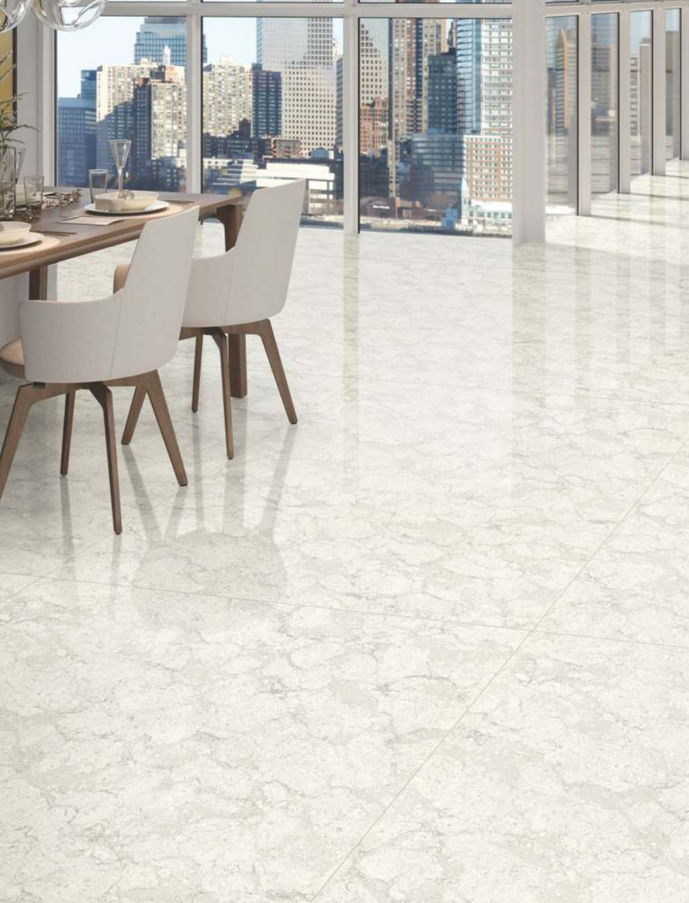

Your browser supports a simpler AR view. Tap the link below to place the tile in your space using AR Quick Look.
🚀 View in ARYour device or browser does not support WebXR for Augmented Reality.
On Android, please ensure "Google Play Services for AR" is installed and updated.